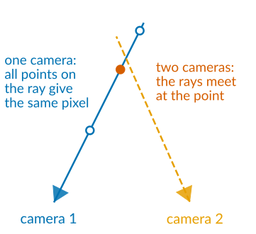
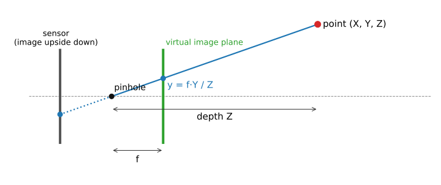
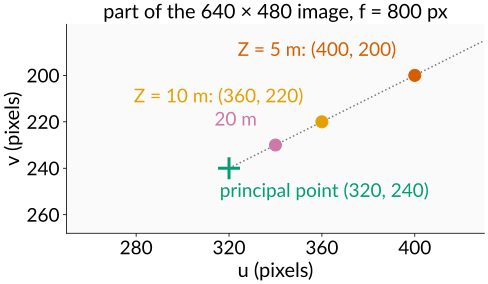
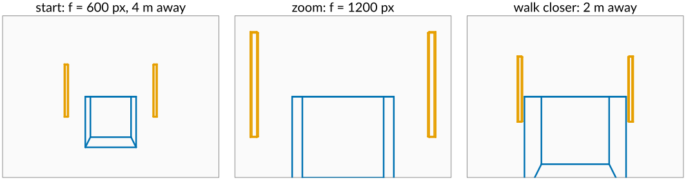
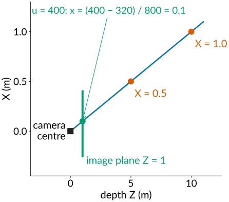
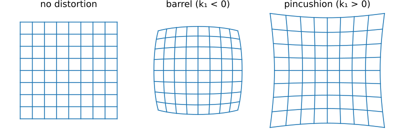
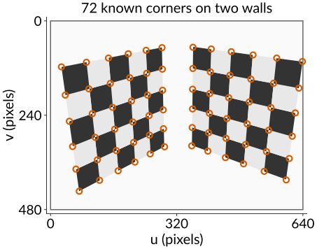
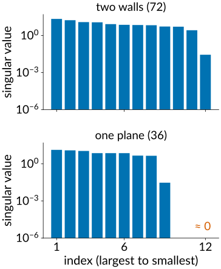
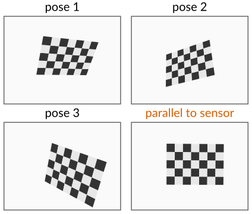
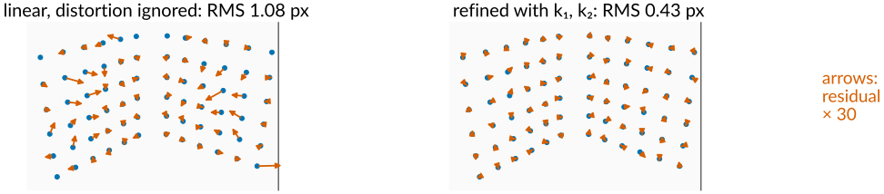

One photograph loses depth: every pixel is a ray. Today’s day gets the geometry back from several images. This first unit is about the instrument itself: the camera, described exactly enough to measure with it.
The pinhole camera: similar triangles, focal length in pixels.
IntrinsicsK (the camera and lens) and extrinsicsR, \mathbf t (where it stands and looks).
From a pixel back to its ray.
Lens distortion: why straight lines bend.
Calibration: photograph an object you know, solve for the camera, then minimise the reprojection error.
Slides titled The math give the formulas and proofs; the ideas are complete without them.
The 3D graphics day ran the camera chain forwards (model → world → view → clip → screen) and ended by running it backwards: from pixels back to rays.
A pixel does not see a point, it sees everything on a ray from the camera centre through that pixel.
One camera cannot tell how far along the ray a point is: depth is lost.
Two cameras that see the same point give two rays; where they meet is the point. That is the whole day in one sentence.
To use this for measuring we need the camera as a known function from 3D points to pixels, with numbers we can trust to a fraction of a pixel.

The pinhole camera

Light from a point passes through one small hole and lands on the sensor. Similar triangles: a point at height Y and depth Z lands at height y = f\,Y/Z. Half as far away, twice as large.
We draw the image plane in front of the hole (the “virtual” image): same triangles, but the picture is not upside down.
Everything divides by depthZ: that is what perspective is.
Focal length in pixels, principal point
Measured in pixels the camera needs only a few numbers, the intrinsics:
Focal length in pixelsf = focal length / pixel pitch. An 8 mm lens on 10 µm pixels: f = 800 px. Twice as long a lens or half the pixel size: twice the f.
Principal point(c_x, c_y): where the optical axis meets the sensor. Near, but not exactly at, the image centre.
Aspect ratio (f_x / f_y) and skew: about 1 and 0 for modern sensors.
A point at camera coordinates (X, Y, Z) lands on the pixel u = f\,\frac{X}{Z} + c_x, \qquad v = f\,\frac{Y}{Z} + c_y. Example: f = 800, (c_x, c_y) = (320, 240), the point (0.5, -0.25, 5) m lands at (400, 200); twice as far, at (360, 220). Only the principal point stays put when Z changes.
The intrinsics belong to camera and lens: they stay fixed as long as zoom and focus stay fixed.

The math: the camera matrix
With homogeneous coordinates (images day: a point gets an extra 1, a scale factor is divided out at the end):
\mathbf X = (X, Y, Z, 1)^\top in world coordinates; R\mathbf X + \mathbf t are the camera coordinates; K maps them to pixels; “\simeq” means equal up to a scale factor (divide by the third entry).
Degrees of freedom: 5 in K, 3 in R, 3 in \mathbf t: 11, which matches a 3 \times 4 matrix up to scale (12 - 1).
The camera centre\mathbf c is the one point that does not project: P\binom{\mathbf c}{1} = 0, so \mathbf c = -R^\top \mathbf t.
Where the camera is: extrinsics
The extrinsics say where the camera stands and where it looks: a rotationR and a translation\mathbf t from world to camera coordinates.
This is the graphics day’s look-at matrix, with one difference: there we chose the camera; here it is unknown and must be measured.
The camera centre in world coordinates is \mathbf c = -R^\top \mathbf t (not \mathbf t: \mathbf t is where the world origin lands in camera coordinates).
6 numbers per camera position: 3 for the rotation, 3 for the position.
Moving the camera changes R and \mathbf t; zooming changes K. Both change the picture, but differently: zooming in scales everything equally; walking closer makes near things grow faster than far things.

Vision and graphics cameras
The same similar triangles, written for two different jobs:
graphics (3D graphics day)
vision (today)
matrix
P_\text{GL}\,V\,M, 4 \times 4
P = K[R \mid \mathbf t], 3 \times 4
output
clip space → [-1, 1]^3, keeps a depth for the z-buffer
pixels directly, depth divided away
axes
looks down -z, y up
looks down +z, ydown
camera
chosen by the programmer
unknown, measured
The two view spaces differ by \mathrm{diag}(1, -1, -1) (flip y and z).
The first two rows of P_\text{GL} are K’s, rescaled from pixels to [-1, 1]; the third row is the depth the z-buffer needs and vision throws away.
Try it: the pinhole camera
From a pixel back to a ray
Run the camera backwards: pixel (u, v) → direction in camera coordinates → world.
Remove the intrinsics: \big((u - c_x)/f,\ (v - c_y)/f,\ 1\big). For f = 800, (c_x, c_y) = (320, 240), the pixel (400, 200) gives (0.1, -0.05, 1): a little right and up of straight ahead.
Rotate into world axes with R^\top and start the ray at the camera centre \mathbf c.
Every point \mathbf c + s\,R^\top K^{-1}(u, v, 1)^\top, s > 0, lands on that pixel.
This is the starting point of everything that follows: two-view geometry intersects such rays, stereo measures where they meet, bundle adjustment moves cameras until they do.

Lens distortion

Real lenses are not pinholes: straight lines bend, more so towards the image corners.
Modelled as a stretch that depends only on the distance r from the image centre (in normalised coordinates): r \to r(1 + k_1 r^2 + k_2 r^4), applied after the division by depth and beforeK.
k_1 = -0.1 at r = 0.4: the point moves to 0.4 \cdot (1 - 0.016) = 0.3936, inwards: barrel. With f = 800 that is 5 pixels.
Undistorting an image is an inverse mapping with interpolation (images day): for every output pixel, ask where it came from.
The math: radial distortion
In normalised camera coordinates (x, y) = (X/Z, Y/Z), with r^2 = x^2 + y^2:
\begin{pmatrix} x_d \\ y_d \end{pmatrix} = \big(1 + k_1 r^2 + k_2 r^4\big)\begin{pmatrix} x \\ y \end{pmatrix}, \qquad \begin{pmatrix} u \\ v \end{pmatrix} = \begin{pmatrix} f_x x_d + s\,y_d + c_x \\ f_y y_d + c_y \end{pmatrix}.
The map is not linear, so the camera is no longer a single matrix: calibration estimates K, R, \mathbf tandk_1, k_2.
Undistorting a point inverts r_d = r(1 + k_1 r^2 + k_2 r^4) for r; a few fixed-point steps r \leftarrow r_d / (1 + k_1 r^2 + k_2 r^4) suffice for moderate distortion.
Other terms exist (tangential distortion when the lens is tilted, more radial terms for fisheye lenses); the idea is the same.
Calibration: photograph something you know
To find the camera’s numbers, photograph an object whose geometry we know exactly:
a checkerboard (corners are easy to find to a fraction of a pixel), a grid of dots, or in microscopy beads and fiducials at known positions;
find the known points in the image (corner detection, structure tensor unit);
solve for K, R, \mathbf t and the distortion such that the camera maps the known points onto the found pixels.
Two ways, depending on the object:
a 3D object (two checkerboard walls at right angles) in one photograph: the direct linear transform;
a flat board in several poses: one homography per pose, then K from all of them.

From a 3D object: the direct linear transform
Each known point \mathbf X_i seen at pixel (u_i, v_i) gives two equations, and they are linear in the 12 entries of P.
P has 11 unknowns (12 numbers up to scale), so 6 points are enough (12 equations); 5 are not.
Collect the equations in a matrix A (2n \times 12): we look for the \mathbf p with A\mathbf p = 0, the null space of A. With noise: the \mathbf p of length 1 that makes A\mathbf p smallest.
Then split P into K (upper triangular) and R (a rotation): the left 3 \times 3 block of P is KR.
The points must not all lie on one plane: then more than one P fits, and A has a larger null space.
Normalise first: pixel coordinates (hundreds) next to 1 make the problem badly conditioned. Shift and scale the points to mean 0 and size about 1 before solving, undo afterwards (Hartley).

The math: the DLT
\mathbf x_i \simeq P\mathbf X_i means the two 3-vectors are parallel: \mathbf x_i \times P\mathbf X_i = 0. With \mathbf p_k^\top the rows of P, two independent rows per point:
\min \lVert A\mathbf p\rVert subject to \lVert\mathbf p\rVert = 1: the right singular vector of the smallest singular value of A (SVD). Exact data: that singular value is 0.
Normalisation: \hat{\mathbf x} = T\mathbf x, \hat{\mathbf X} = U\mathbf X (mean 0, RMS distance \sqrt 2 and \sqrt 3); solve for \hat P; P = T^{-1}\hat P U.
RQ decomposition of the left 3 \times 3 block M = KR: Gram–Schmidt from the last row upwards; then \mathbf t = K^{-1}\mathbf p_4.
Coplanar points (Z = 0): the three columns of A that multiply Z vanish, so the third column of P is free: the null space grows from 1 to 4 dimensions.
From a flat board: homographies
The image of a plane is a simpler map: a 3 \times 3homographyH (8 numbers up to scale), found from 4 points by the same null-space trick.
One pose of a flat checkerboard gives one H; it mixes K with that pose.
But the board’s two axes are perpendicular and have the same length in 3D. That gives 2 equations on K per pose.
K has 5 unknowns: 3 poses (or 2, if we assume zero skew) determine it (Zhang, 2000).
The poses must differ in tilt: boards that are all parallel to the sensor give the same constraint over and over, and the focal length trades off against the distance.
Practical, because a flat printed board is easy to make accurately.
The homography comes back in stereo (rectification) and multi-view stereo (sweeping planes).

The math: homographies and planar calibration
For points on the plane Z = 0: \mathbf x \simeq K[\mathbf r_1\ \mathbf r_2\ \mathbf r_3\ \mathbf t](X, Y, 0, 1)^\top = \underbrace{K[\mathbf r_1\ \mathbf r_2\ \mathbf t]}_{H}(X, Y, 1)^\top.
Both are linear in the entries of \omega: stack 2 rows per view, take the null vector, then K from \omega (Cholesky of \omega gives K^{-1}).
Each pose’s R, \mathbf t then follow from K^{-1}H.
Linear first, then refine
The linear solutions minimise an algebraic quantity, not the error we care about, and they ignore distortion. So they are a starting point.
Reprojection error: for every known point, the pixel distance between where it was seen and where the camera model puts it. Minimise the sum of squares over all parameters, distortion included.
That is nonlinear least squares, solved by Gauss–Newton steps (the bundle adjustment unit does this in detail).
A good calibration: RMS reprojection error of a few tenths of a pixel.
Read the residual arrows: random directions = noise (fine); a pattern (all pointing outwards at the corners, or all one way) = a missing model term (distortion, a wrong point), not noise.

The math: the reprojection error
With \pi(\cdot) the full camera model (rotation, translation, division by depth, distortion, K) and \boldsymbol\theta = (f_x, f_y, c_x, c_y, k_1, k_2, \text{and per view } \mathbf w_j, \mathbf t_j):
Rotations as axis–angle vectors \mathbf w (3 numbers, direction = axis, length = angle), so every parameter vector is a valid camera.
If the pixel noise is Gaussian and independent, this is the maximum-likelihood estimate (the same argument as for least squares fits in general).
With n points and pixel noise \sigma, the RMS of the residual vectors approaches \sigma\sqrt 2 from below (fewer degrees of freedom than measurements): about 0.7 px for \sigma = 0.5 px.
Try it: calibrating a camera
Weak and degenerate setups
Setup
What goes wrong
all 3D points on one plane (DLT)
more than one P fits: a family of solutions
fewer than 6 points (DLT) or 4 per homography
too few equations
flat board, all poses parallel to the sensor
focal length and distance trade off: f undetermined
points only in the image centre
distortion (which grows towards the edges) unconstrained
zoom or focus changed after calibrating
K (and distortion) changed too
Microscopes are often close to orthographic (telecentric): the “divide by depth” disappears and the camera becomes affine. SEM tilt series and multi-view light-sheet data are calibrated and aligned with the same ideas, using the affine camera.
Summary
A camera is a function from 3D points to pixels: similar triangles plus a few numbers. Intrinsics K: focal length in pixels, principal point (skew, aspect). Extrinsics: rotation and position.
A pixel is a ray from the camera centre; distance along it is lost.
Lens distortion bends straight lines; modelled radially and estimated along with the rest.
Calibration: photograph a known object. 3D object: the DLT from \ge 6 non-coplanar points. Flat board: one homography per pose, \ge 3 tilted poses.
Linear solution first, then minimise the reprojection error; patterns in the residuals reveal a missing model term.